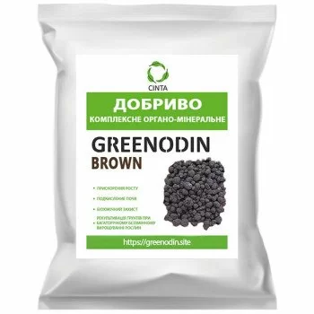
GREENODIN BROWN fertilizer
GREENODIN BROWN is an ameliorant based on leonardite, diatomite and peat for acidifying alkaline and neutral soils. Suitable for crops that need an acidic environment.
Recommended for 17 crops
- Purpose
- Soil ameliorant and reclamation agent
- Manufacturer
- Ukraine
- Certification
- Organic Standard, Regulation (EU) 2018/848
- SKU
- GREENODIN BROWN
GREENODIN BROWN complex organic fertilizer, ameliorant in granules, is an innovative complex granulated organo-mineral fertilizer, reclamation agent and ameliorant based on silicon-containing natural minerals and leonardite with added peat.
Purpose
For acidifying alkaline and neutral soils and enriching depleted ones. This matters for plants that cannot grow and develop normally in alkaline conditions. Acidifying such soils creates more favorable conditions for plant growth and development.
Holds moisture moderately well, which makes it a good fit for conditions where crops lack water. Reduces irrigation water use by up to 30%, which saves considerably on irrigation costs and gives more even plant growth and development.
Increases the water-holding capacity of soils and thus the efficiency of water use by crops. This is important for cutting irrigation costs and raising yields.
Restores the physical structure of soils and raises fertility. This improves water permeability and increases the level of nutrients available to plants.
Speeds up plant growth. The organic fertilizer contains many beneficial microelements and minerals that accelerate plant growth and development, and helps supply plants with all the nutrients they need for optimal growth and development.
Strengthens the biochemical defense of plants. GREENODIN organic fertilizer contains many beneficial microorganisms that have a positive effect on plant growth and development. For example, bacteria of the genus Bacillus in the fertilizer raise plant resistance to stress such as drought or frost. With GREENODIN BROWN plants become more resistant to diseases and pests, which in turn lets you cut spending on chemical plant protection products. Stronger immunity also helps plants cope with stressful conditions and recover from them faster.
Improves the uptake of microelements by plants.
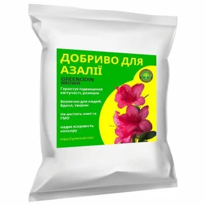
Azalea fertilizer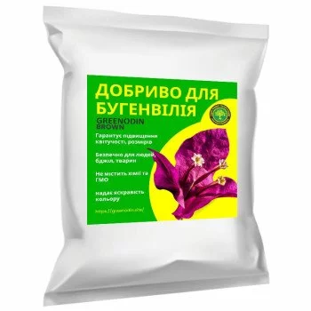
Bougainvillea fertilizer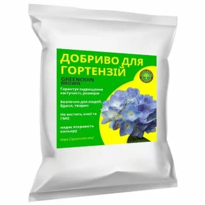
Hydrangea fertilizer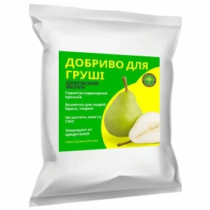
Pear fertilizer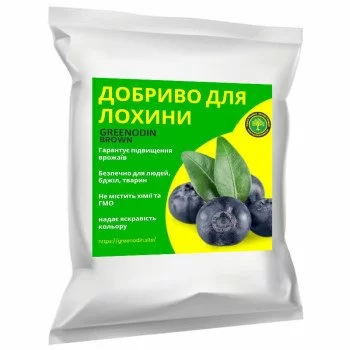
Blueberry fertilizer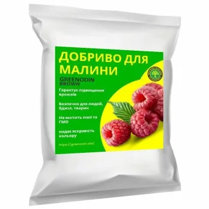
Raspberry fertilizer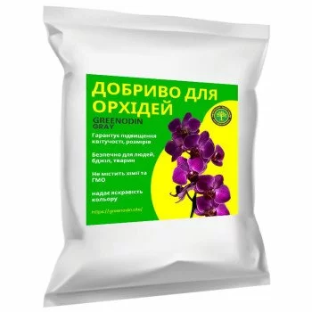
Orchid fertilizer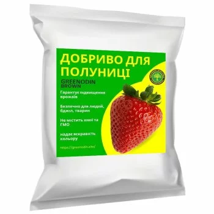
Strawberry fertilizer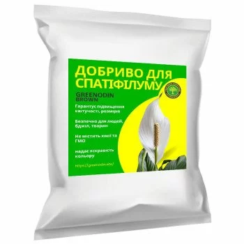
Spathiphyllum fertilizer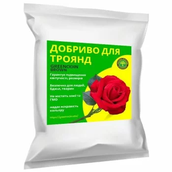
Rose fertilizer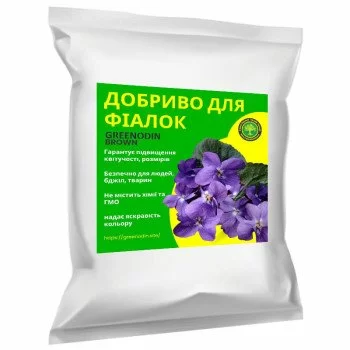
Violet fertilizer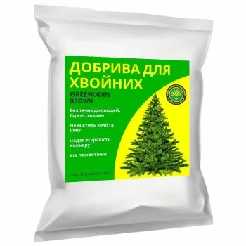
Conifer fertilizer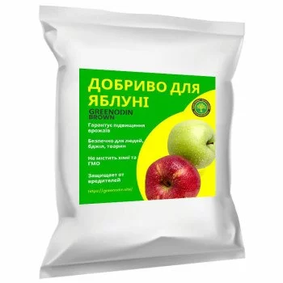
Apple tree fertilizer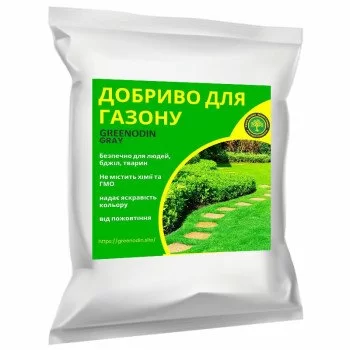
Lawn fertilizer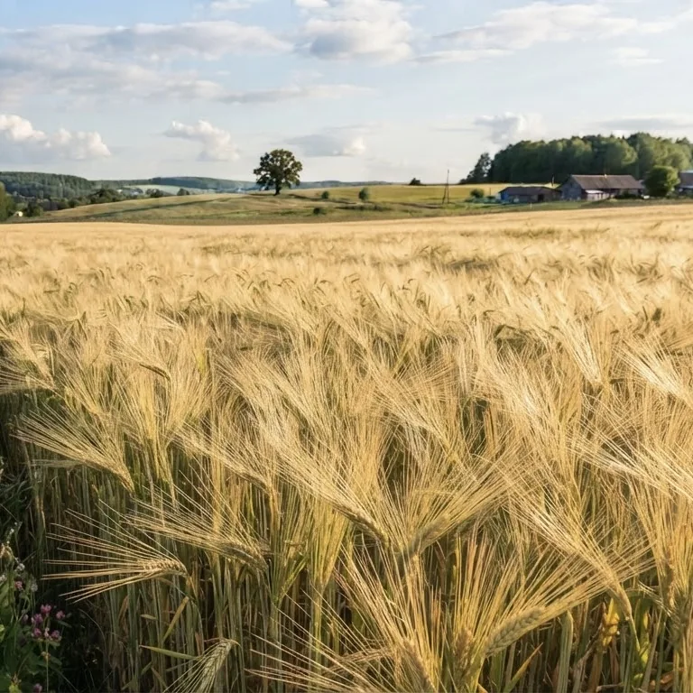
Barley fertilizers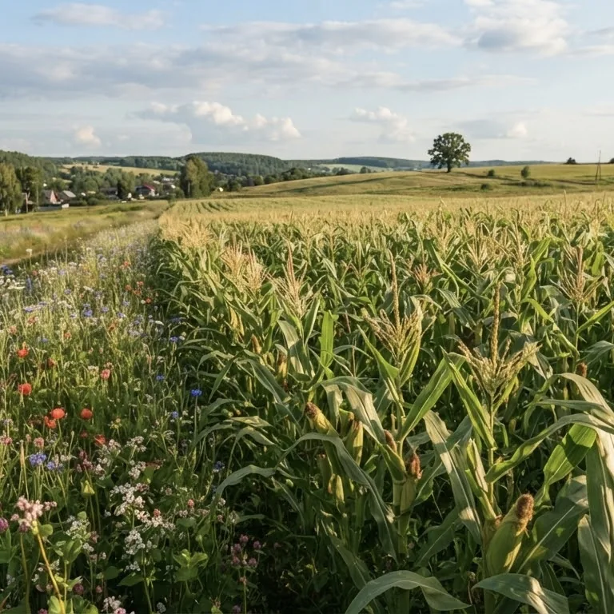
Maize (corn) fertilizers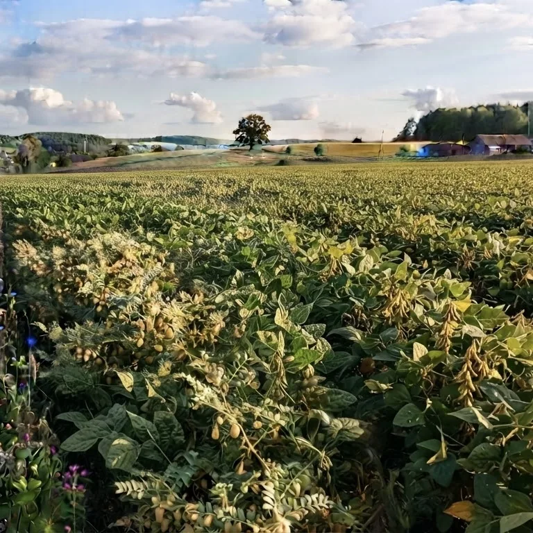
Soybean fertilizers
Reclamation of soils under long-term continuous cropping. This fertilizer enriches the soil with the nutrients it needs and helps to restore its fertility.
- leonardite, diatomite, peat. Modified silicon-containing minerals. Active substance: active silicon.
- macro- and microelements needed for plant growth and for greater resistance to stress factors
- agronomically beneficial microorganisms
Technical specifications: TU U 20.1-13856524-001:2014. Guaranteed shelf life of the packaged mixture is three years from the date of manufacture. Storage conditions: during transport, loading and unloading the product must be protected from precipitation. Store on sites protected from precipitation, groundwater and direct sunlight. GREENODIN BROWN was developed by leading Ukrainian scientists. The product is certified under the Standard for the production of inputs permitted in organic agriculture and processing that comply with the requirements of Regulation (EU) 2018/848, certificate No. 23-0504-01/02 dated 16.10.2023. The manufacturer reserves the right to change the packaging design
It depends on the agrochemical characteristics of the soil, but on average: for open and protected farming (greenhouses, glasshouses):
- 250 kg of GREENODIN organic fertilizers per 1 ha, spread
- 2.5 kg of GREENODIN per 100 m² of land, spread
- 25 g of GREENODIN organic fertilizers per 1 sq. m, spread
- 25 g of GREENODIN per 1 running meter, spread
when growing seedlings, ornamental plants, flowers:
- 0.25 l of GREENODIN organic fertilizers per 1 m³ of soil mix, mix in
- 0.25 kg (roughly one 250 ml glass) of GREENODIN organic fertilizers per 1 m³ of soil mix, mix in
- 25 g or one teaspoon of GREENODIN organic fertilizers per 1 l of soil mix, mix in
- 25 g of GREENODIN organic fertilizers per 1 sq. m, spread
The cumulative effect of the product lets you lower the maximum rate from 250 kg/ha (25 g/sq. m) to 80 kg/ha (8 g/sq. m) by the 5th season of use
It is recommended to mix the substrate into the soil mix for protected farming and use in pots. In open-field farming, spread the GREENODIN reclamation agent by hand or with mechanical equipment. The fertilizer should be worked in to a depth of no more than 5–7 cm so that the nutrients penetrate the soil quickly and evenly.
After applying the GREENODIN reclamation agent, it is recommended to water the soil so that the fertilizer dissolves quickly and spreads evenly across the whole crop area.
We recommend applying the GREENODIN reclamation agent in spring and autumn, when the soil is still sufficiently moist and the air temperature is not too high, so that the fertilizer works at its best.
The packaging of GREENODIN matters for its quality and shelf life. GREENODIN organo-mineral mixtures are supplied in polyethylene bags of 5 kg and in polypropylene sacks of 25 kg and 50 kg. This makes the product easy for the end user to store and transport, and protects it from external influences.
The polypropylene sacks have a wall thickness of 65–70 µm. The material is strong enough to keep the fertilizer intact during transport and storage.
For wholesale buyers GREENODIN is supplied in big bags of 600 kg, 1000 kg and 1100 kg. That means fewer packages and lower time and money costs for transport and storage.
Higher soil fertility with improved agronomic properties and biological indicators. Yield increase of up to 65% thanks to better nutrient properties of the soil and faster plant growth
Lower soil toxicity and slower development of phytopathogenic microorganisms, which is very important for the health of plants and people.
Stronger plant vitality. GREENODIN fertilizer stimulates root growth and increases root length, which improves plant nutrition and makes plants more resistant to disease.
Stimulated plant development and up to 30% faster crop growth, with irrigation water use cut by up to 30%. This is especially important in a changing climate with growing water scarcity.
The next application rate drops by 20% every season, which noticeably cuts fertilizer costs.
Less use of agrochemicals, up to giving them up completely, which is very important for human health and the environment.
Higher quality and market value of the environmentally clean produce you grow
Using GREENODIN organic fertilizers supports sustainable farming, which uses resources with the needs of future generations in mind.
The shelf life of GREENODIN BROWN is 3 years from the moment the package is opened.
After the guaranteed storage period expires, the fertilizers can be used as intended once the quality indicators have been checked against the technical specifications.
What is GREENODIN BROWN used for?
GREENODIN BROWN is an ameliorant based on leonardite, diatomite and peat for acidifying alkaline and neutral soils. Suitable for crops that need an acidic environment.
What is the application rate of GREENODIN BROWN per hectare?
The base rate is 250 kg/ha (25 g/m², 2.5 kg per 100 m²). Thanks to the cumulative effect the rate is cut by 20% every year, down to 80 kg/ha from the 5th–6th season. The exact rate depends on the soil analysis.
How do you apply GREENODIN BROWN in the field?
The 3–5 mm granules are applied with a standard mineral fertilizer spreader before primary tillage or before sowing, after which the field is harrowed or disked.
What packaging does GREENODIN BROWN come in?
Polyethylene bags of 5 kg, polypropylene sacks of 25 and 50 kg. For farms and wholesale buyers, big bags of 600 to 1,100 kg.
Which crops is GREENODIN BROWN suitable for?
Barley, corn, soybeans, azalea, bougainvillea, lawn, hydrangeas, pear, blueberry, raspberry, orchids, strawberry, spathiphyllum, roses, violets, conifers, apple tree.
Can different GREENODIN lines be combined?
Yes. Fertilizers from different GREENODIN lines can be combined depending on the acidity and composition of the soil. GREENODIN also lets you gradually reduce mineral fertilizers, up to giving them up completely.
Can it be used in organic farming?
Yes. GREENODIN products have been confirmed by the certification body Organic Standard for use in organic farming in accordance with Regulation (EU) 2018/848. A scan of the certificate is on the Patents and certificates page.
Is the fertilizer safe for people, bees and animals?
Yes. The fertilizer is safe for people, bees and animals and contains no synthetic chemicals or GMOs.
Certificates
 Organic StandardCertificate No. 23-0504-01/02
Organic StandardCertificate No. 23-0504-01/02 IFOAM — Organics InternationalMembership of NV LLC Sinta
IFOAM — Organics InternationalMembership of NV LLC Sinta
Patents


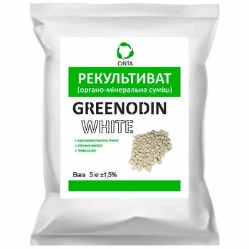
GREENODIN White fertilizer
GREENODIN WHITE is a soil conditioner based on potassium silicate, tripoli, diatomite and leonardite with high…
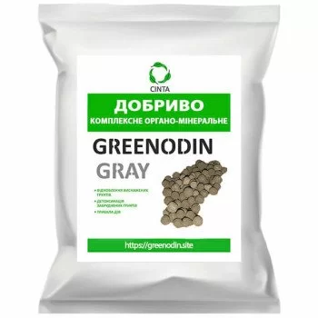
GREENODIN Gray fertilizer
GREENODIN GRAY is a soil restorer based on leonardite and silica-bearing minerals with a medium organic content.
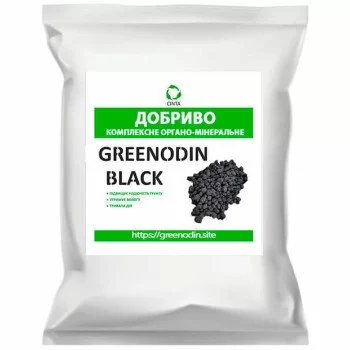
GREENODIN Black fertilizer
GREENODIN BLACK is a soil conditioner based on leonardite and diatomite for degraded, depleted and contaminated…
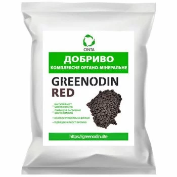
GREENODIN Red fertilizer
GREENODIN RED is a soil conditioner based on brown bentonite, lignite and silica-bearing minerals for increasing…
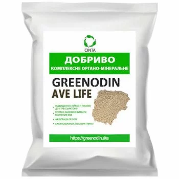
GREENODIN Melior fertilizer
GREENODIN MELIOR is a soil conditioner based on natural calcium carbonate and silica for liming acidic and…
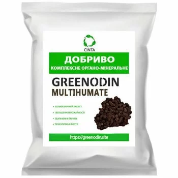
GREENODIN Multihumate fertilizer
GREENODIN MULTIHUMATE is a soil conditioner based on lignite and diatomite, enriched with beneficial bacteria.
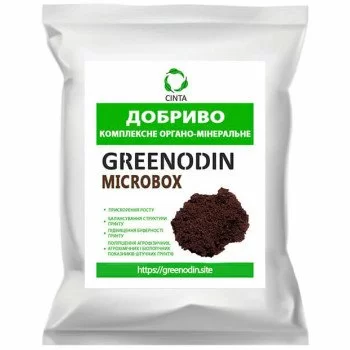
GREENODIN Microbox fertilizer
GREENODIN MICROBOX is a growing substrate based on peat, leonardite and diatomite with beneficial microorganisms.